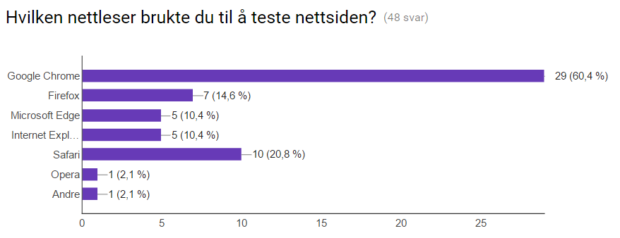

Administrative Detaljer
Klient: Løn Gartneri / TH flor AS
Kontaktpersoner: Roar Tvedten og Henrik Lorgen
Spørreundersøkelse
Vi spurte testerne hvordan de likte designet, brukervennligheten, informasjonsflyten, hvilken nettleser de brukte og deres totale inntrykk av nettsiden. Vi ga dem også en mulighet til å skrive en tilbakemelding om siden hvis de ønsket det. Totalt fikk vi inn 49 svar på spørreundersøkelsen. Spørreundersøkelse: https://docs.google.com/forms/d/e/1FAIpQLSdrkBeDlvkfTI0rtq6nJmun_BbLA_VVqCs-5PFuJc3iYCWJDg/viewform?c=0&w=1 Svar på spørreundersøkelsen: https://docs.google.com/forms/d/18ksKIjaJhd67lOLH1f3_hfUXXh5XXzSw78oMojULZG0/edit?c=0&w=1#responses
Testerne/Publikum
Vi ønsket å finne så mange testere som mulig innenfor det publikummet som nettsiden og klienten ønsker å treffe. Dette ville da stort sett være voksne mennesker av begge kjønn som er interessert i blomster og hage. Vi sendte ut spørreundersøkelsen vår til mange testere fra 20 år og oppover. De fleste svarene kom fra studenter i 20 årene og voksne på 40, 50 og 60 år.
Testing Platform
Våre testere har brukt forskjellige nettlesere som kan sees her:  Vi har også fått testet siden på både mac og pc, og det fungerer den bra. På mobil har vi ikke foksusert på et responsivt design, men heller på at den skal fungere bra.
Oppsummering av tilbakemeldingene
Design:
Som man kan se på spørreundersøkelsen under spørsmålet om design var det omtrent 85% av testerne som gav nettsiden
vår enten fire eller fem i en skala fra en til fem. Dette betyr at de aller fleste likte nettsidens design veldig godt.
Dette kommer også frem i en del av de skrevne tilbakemeldingene med kommentarer som
“Great page!, Simple and straightforwardly” og “Great looking page!”
Navigasjon og brukervennlighet:
Omtrent 92% av de som testet siden synes brukervennligheten var veldig god(fire eller fem).
Det samme har vi også fått høre av klienten vår som synes nettsiden passer deres brukere veldig godt.
Innhold:
Når det gjelder innholdet på nettsiden ser vi på både klientens behov og tilbakemeldinger vi har fått fra undersøkelsen.
Klienten vår er veldig fornøyd med innholdet på siden og hadde ikke noe mer han ønsket på nåværende tidspunkt.
Siden vil naturligvis oppdateres over tid og da vil det legges mer til.
Informasjon:
Omtrent 95% av testerne synes det var veldig lett å finne frem til riktig informasjon på nettsiden vår.
Vi fikk ingen tilbakemeldinger fra brukere som hadde problemer med å finne det de lette etter.
 Skrevne tilbakemeldinger:
Vi fikk også inn en del tilbakemeldinger og kommentarer fra brukere som skrev hva de synes om siden og hva de synes kunne være bedre.
Stort sett var det folk som synes siden så veldig bra ut og fungerte bra, men det var også noe konstruktiv kritikk.
For eksempel var det noen som mente bildene var for store, at videoene burde vært på norsk,
at vi ikke treffer målgruppen(b2b) godt nok, litt diffus overgang mellom de to delene av bedriften og noen feil
skalerte bilder. Dette vil vi ta til ettertanke hvis nettsiden skal utvikles videre.
Her er et lite utdrag av kommentarene vi fikk inn:
Skrevne tilbakemeldinger:
Vi fikk også inn en del tilbakemeldinger og kommentarer fra brukere som skrev hva de synes om siden og hva de synes kunne være bedre.
Stort sett var det folk som synes siden så veldig bra ut og fungerte bra, men det var også noe konstruktiv kritikk.
For eksempel var det noen som mente bildene var for store, at videoene burde vært på norsk,
at vi ikke treffer målgruppen(b2b) godt nok, litt diffus overgang mellom de to delene av bedriften og noen feil
skalerte bilder. Dette vil vi ta til ettertanke hvis nettsiden skal utvikles videre.
Her er et lite utdrag av kommentarene vi fikk inn:
Totalinntrykk
Vi spurte testerne om å gi oss en tilbakemelding på deres fullstendige inntrykk av nettsiden på en skala fra en til fem. Omtrent 52% gav nettsiden fem, 38% gav den fire og de siste 10% var jevnt fordelt på tre og to. Dette betyr at de fleste synes siden var veldig god totalt sett og hadde ikke noe særlig å klage på.
Vår tilbakemelding til testerne
Veldig mye av tilbakemeldingen vi fikk var ikke særlig konstruktiv, for eksempel kommentarer som “Veldig bra nettside” er fint å høre, men hjelper oss ikke å bygge en bedre nettside. Tilbakemeldingen på designet vårt var nesten bare fire eller fem(skala fra en til fem) noe som betyr at det er bra, men kan bli enda bedre. De aller flere gav oss en firer på brukervennlighet noe som betyr at det enda er en vei å gi for optimalisere brukervennligheten på siden. Her kan vi for eksempel prøve å gjøre siden lettere å navigere seg gjennom og enklere å forstå med minimale datakunnskaper. Vi fikk kommentarer på at videoene burde vært på norsk, men det ville vært et større prosjekt for andre enn vi som lager selve nettsiden. Vi hadde også noen feil-skalerte bilder vi må fikse. Det var og noen som mente vi burde ha en søkefunksjon noe som absolutt kan implementeres i fremtiden. Noen mente også at vi burde ha satt priser på blomstene, men ettersom dette ikke er fastsatt er det dessverre ikke mulig. Alt i alt ville all konstruktiv kritikk bli tatt til ettertanke og vurdert.
Self-reflection
Even: Det jeg har lært fra dette prosjektet er en mer praktisk forståelse av faget enn det jeg har opparbeidet gjennom innleveringene og forelesninger. Det var i starten veldig lett å bli fokusert på at hvis man fikk noe til å fungere og se fint ut i den nettleseren man jobbet i så var dette korrekt. I løpet av prosjektet har jeg lært å bli mer fokusert på hyppigere testing av funksjonalitet og design på tvers av browsers og ikke minst aspect ratios på skjermer. Da vi designet siden fant vi ut at ikke alt av design så fint ut og likt ut på tvers av aspect ratios og endte dermed opp med å bruke mye tid på å finne en god måte å gjøre dette på. I starten var løsningen å bruke media queries, men til slutt endte vi opp med å justere dette via margins. Dette gjør også at siden er mer responsiv til forskjellige størrelser. Det gjør også at mobilsiden, selv om den ikke er totalt responsiv, fungerer mer optimalt. Har også gjennom et slikt prosjekt som dette fått en annen forståelse for prosjektarbeid innen IT. Har tidligere gjort mye prosjektarbeid innen andre fag der man ofte lager en grundig plan og jobber mer separert med sine deler før man går gjennom dette. Her har man selvfølgelig også jobbet med en grundig plan, men man blir mye mer involvert i alle deler av prosjektet og må jobbe mye tettere enn det jeg ofte har gjort i andre prosjekt. Eirik: Jeg personlig har erfart masse gjennom dette prosjektet, jeg har lært mer av HTML struktur og oppsett, hvordan JavaScript kan forenkle mange elementer på en HTML side, og ikke minst forenkle steder hvor man skal ha gjenbruk på flere HTML-sider. Ved bruk av CSS har lært mye om bruk av et responsivt design i forhold til forskjellige skjermstørrelser. Jeg har selvfølgelig brukt google og dens venner for å lære og forstå mer av det vi allerede har drevet med på et grundigere basis, samt også lære nye ting jeg kan bruke senere. Det jeg kanskje har lært mest av er alle problemene som dukker opp underveis, enten det har med hensyn man må ta til forskjellige nettlesere, koding som virker håpløs hvor det nesten ikke finnes løsninger, og ikke minst hvor viktig det er å ha en oversiktlig og ryddig kode. I tillegg har jeg fått erfart å jobbe med et prosjekt i en gruppe over en lengre tid, og ser viktigheten av det å kunne ha et godt samarbeid og god kommunikasjon. Her igjen ser man også viktigheten av kommentarer og oversikt i dokumenter. Merket også at det krevde mer samarbeid i et prosjekt som dette, enn andre tilfeller hvor man lett kan inndele ansvar. Her var det viktig at alle var enige i beslutninger. Erling: Gjennom dette prosjektet har jeg lært masse om hele arbeidsprosessen som skal gjøres når man laget en nettside for en reell kunde og hvordan det er å jobbe i team med ansvar for forskjellige ting. Det å jobbe med html, css og javascript sømløst over flere dokumenter med flere mennesker er en oppgave som krever veldig god kommunikasjon og samarbeid. Man må alltid vite hva de andre jobber med og fokusere på å ikke skape flere problemer enn man løser. Jeg har lært masse om hvordan man setter sammen de ulike delene av faget til et større prosjekt som krever alle aspektene av pensum(om ikke mer!) Jeg synes også det var litt vanskelig å få tilbakemeldinger på nettsiden vår som kunne hjelpe oss å gjøre den bedre. Hvis spørreundersøkelsen hadde gått mer i detalj hadde nok ikke like mange svart, og tilbakemeldinger som “bra” og “dårlig” hjelper ikke så mye for å finne ut hva vi skal endre og gjøre bedre. Oppsummering: